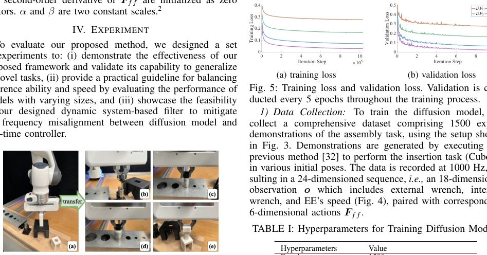
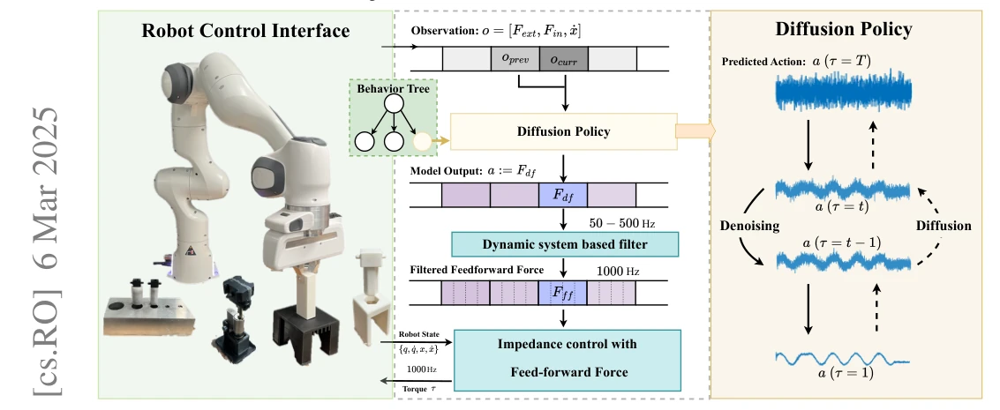
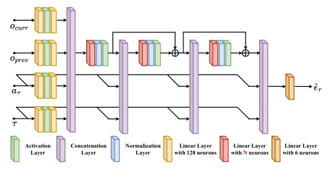
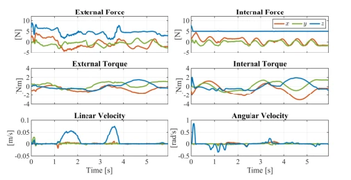
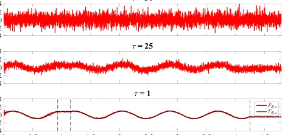
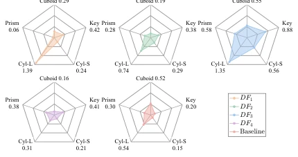
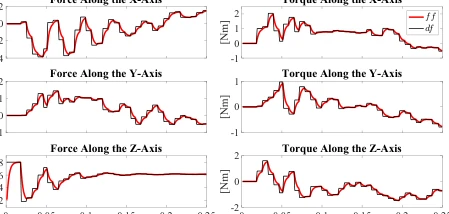
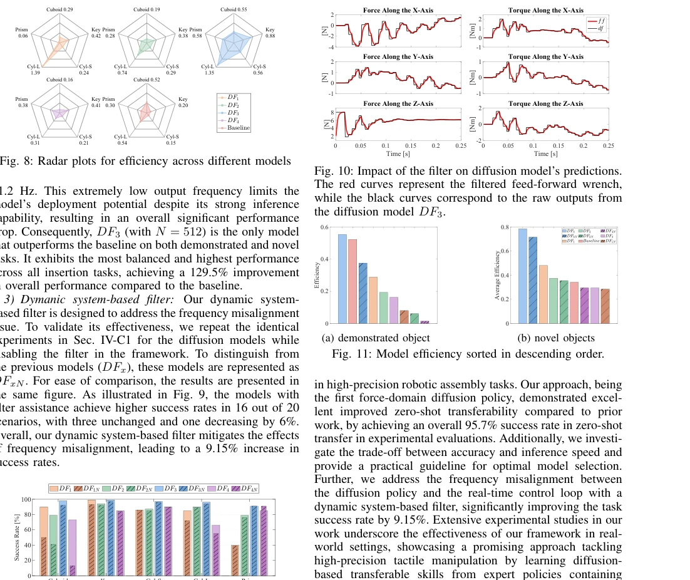

This paper transfers diffusion models to the force domain, attempting to address tactile control challenges in precision assembly. The highlights are indeed impressive; a 95.7% zero-shot transfer success rate is a formidable feat in millimeter-level assembly, and it represents the first attempt to use diffusion to generate 6D torques rather than the traditional motion domain. However, do not rush to hype 'general intelligence'; it is essentially imitation learning, relying on demonstration data generated by expert policies, and remains distant from end-to-end autonomous decision-making. Although that dynamic system filter solves the pain point of frequency desynchronization, it is more like an engineering 'patch' rather than a fundamental algorithmic innovation. Additionally, the larger the model, the slower the inference; this age-old trade-off problem ultimately relies on engineers tuning parameters and selecting models, as the algorithm itself offers no magical acceleration scheme. Overall, it is a solid engineering improvement, but slightly conservative in theoretical breakthroughs, suitable for industrial deployment but far from AGI.
Precision assembly is core to robot manufacturing and service, but traditional position control cannot meet sub-millimeter accuracy requirements [10]. Although force control is important, hardware is costly and stability is difficult to guarantee [5], [7]–[13], leading academia to often settle for using motion domain action spaces. Although Transformers [15]–[20] and diffusion models [21]–[31] have demonstrated generalization capabilities in policy learning, how to combine them with force control to achieve high-precision tactile manipulation remains a gap. Existing methods like RVT-2 achieve only about 50% success rate on precision insertion tasks [20], while behavior tree-based expert strategies can adapt but are difficult to transfer directly [32]. Furthermore, the misalignment problem between diffusion model inference frequency and real-time control loops (1000Hz) has not been fully resolved, limiting its application in high-frequency force control. Therefore, there is an urgent need for a framework that can inherit expert policy adaptability while achieving zero-shot transfer through force-domain diffusion.

Fig. 3: Experiment Setup. The object grasped by the robot in the left figure is the training object: (a) Cuboid: A 35 mm × 25 mm × 60 mm dimensional cuboid (0.1 mm clearance). The four objects on the right are applied to validate the transferability: (b) Key: A 37 mm long key; (c) Cyl-S: A 50 mm long cylinder with a diameter of 20 mm (0.02 mm clearance); (d) Cyl-L: A cylinder with a length of 50 mm and diameter of 30 mm (0.025 mm clearance); (e) Prism: A 50 mm long octagonal prism with a side length of 11 mm (0.05 mm clearance).
The TacDiffusion framework is divided into two major modules: action generation and execution. In terms of data flow, the system collects observations o containing external torque, internal torque, and end-effector velocity, inputting them into the diffusion model to generate 6D torque Fdf. The core innovation lies in the diffusion policy directly outputting force-domain actions rather than positions. The diffusion model is based on the DDPM architecture [40], estimating noise through a residual network and utilizing historical observations to enhance prediction accuracy. To solve the mismatch problem between diffusion model inference frequency (50-500Hz) and robot low-level control (1000Hz), the authors designed a dynamic system-based filter (Eq. 11), interpolating and smoothing low-frequency outputs into high-frequency commands. The execution end adopts impedance control with feedforward force [45], combining target pose and force commands to regulate robot motion and compliance. Additionally, the strategy imitates behavior tree-based expert strategies [32], inheriting the ability to switch skill primitives based on tactile feedback, achieving learning from single-task demonstrations to multi-task zero-shot transfer.

Fig. 1: Framework Overview: TacDiffusion processes observations o, including both tactile and spatial information, to generate 6D wrench Fdf. It addresses the frequency misalignment between the diffusion model and the real-time controller through a dynamic system-based filter, and regulates robot’s force and motion behavior using impedance control with feed- forward force Fff.

Fig. 2: Network architecture of the noise estimator.
Experiments were conducted on a Franka Panda robot, with the training object being Cuboid, and test objects including Key, Cyl-S, Cyl-L, and Prism, four new objects. Different scale diffusion models (DF1-DF4) and the original expert strategy baseline were compared. Evaluation metrics include success rate, execution time, and efficiency (ISO/IEC 25062). Results show that the DF3 model performed best on both training and test objects, with an average zero-shot transfer success rate of 95.7%, superior to the baseline's 83.3%. Ablation experiments indicate that the dynamic filter improved success rate by 9.15%, effectively alleviating frequency misalignment. Meanwhile, the study reveals the trade-off between model accuracy and inference speed: DF4 has the highest accuracy but frequency is only 51.2Hz, leading to performance degradation, while DF3 achieved the best balance at 141.8Hz. This provides guidance for model selection in actual deployment.

Fig. 4: An example view of observations in the dataset.

Fig. 6: Denoising process with model DF3. From the top down, the red curves indicate the change in the diffused actions during the denoising process. The black refers to the corresponding ground truth.

Fig. 8: Radar plots for efficiency across different models

Fig. 10: Impact of the filter on diffusion model’s predictions. The red curves represent the filtered feed-forward wrench, while the black curves correspond to the raw outputs from the diffusion model DF3.

Fig. 9: Impact of the dynamical system-based filter on the success rate of high-precision assembly tasks